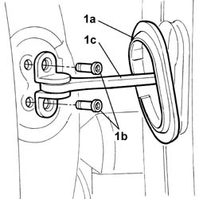
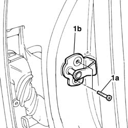
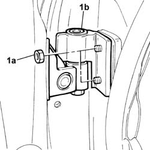

7005A14 front side door - adjust centering and moulding - includes adaptation of hinges and seals on door compartment
- Path
- Procedures > 70 FITTINGS > 7005 passenger compartment front side doors > 7005A FRONT DOOR ASSEMBLY > 7005A14 front side door - adjust centering and moulding - includes adaptation of hinges and seals on door compartment
- Kind
- repair procedure (removal / refitting; the operation number is the code)
- Applies to
- all engines; all production periods
- Interactive page
- https://sloeber94.github.io/elrnDB-lThss/en/#/79812
Applies to: all engines; all production periods
1. Release the plastic protection (1a) and loosen the door check strap (1c) fixing bolts (1b).

Applies to: all engines; all production periods
- Carry out the operations described below for the transverse adjustment of the door in relation to the door housing seal.
1. Undo the fixing bolts (1a) and remove the door striker (1b).

Applies to: all engines; all production periods
1. Loosen the nuts (1a) fixing the door hinges (1b).

Applies to: all engines; all production periods
- When the adjustment is completed, tighten the nuts fixing the door hinges and the bolts fixing the door striker to torque.
 | Value - daNm | Fastening | Component | Ø |
|---|---|---|---|---|
. | (door) 3.6 | Nut | FRONT SIDE DOOR HINGES | M8 |
| Value - daNm | Fastening | Component | Ø |
|---|---|---|---|---|
. | 2.4 | Bolt | STRIKER ON FRONT SIDE DOOR PILLAR | M8 |
- Carry out the operations described below to adjust the door in a vertical and lengthwise direction.
1. Loosen the nuts (1a) fixing the door hinges (1b).
Applies to: all engines; all production periods
- Restore the paintwork in the area affected by the operation.
- When the adjustment is completed, tighten the door hinge bolts to torque.
| Value - daNm | Fastening | Component | Ø |
|---|---|---|---|---|
. | (door) 3.6 | Nut | FRONT SIDE DOOR HINGES | M8 |
- At the end of each adjustment, tighten the bolts fixing the door check strap.